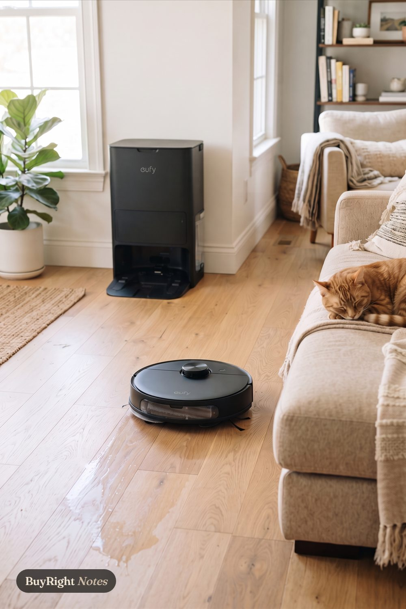

Clean home
eufy E25 robot vacuum and mop
"Vacuums and mops in one run, then empties, washes its mop and refills itself at the dock."
Why we picked it
We chose it for hands-off floors: it vacuums and mops in one run, then empties, washes and dries itself at the dock.
- Roller mop rinsed with clean water as it works
- Dock empties dust, dries the mop and refills water
- Side arm reaches along baseboards and corners
- Size
- the dock is 18.2 in wide, 17.2 in tall and 14.6 in deep; 37.5 lb boxed
- Runtime
- up to 125 minutes vacuuming and mopping; the dust bag lasts about 75 days
- Works with
- the eufy app on 2.4 GHz Wi-Fi only; Alexa, Google Assistant and Siri
Skip it if you have no wall space for a tall dock. Dust bags and mop parts get replaced over time.
Before you buy
- Dock footprint: 18.2 in wide, 17.2 in tall and 14.6 in deep against a wall, with an outlet. Measure that spot first.
- Floors: best on hard floors and low carpet; thick rugs and stairs still need an upright or stick vacuum.
- Wi-Fi: the app connects on 2.4 GHz only. Dust bags (about 75 days each) and mop parts are consumables.
Fits: Busy homes with pets, where hair comes back daily and nobody is home to chase it.
Not for: Small spaces with no wall room for a tall dock.
Goes with
- Rocco & Roxie enzyme stain and odor spray, 32 oz: for the accidents a vacuum cannot fix
- FURminator deShedding tool, large dogs: less hair for the robot to chase
Full guide: read it
As an Amazon Associate, BuyRight Notes earns from qualifying purchases. We pick products from published specs and our own notes, not paid placements.

Clean home
 BISSELL Little Green Mini, spot cleanerA small spot cleaner for spills and pet accidents: it sprays, scrubs and lifts the mess from couches, rugs and car seats.
BISSELL Little Green Mini, spot cleanerA small spot cleaner for spills and pet accidents: it sprays, scrubs and lifts the mess from couches, rugs and car seats.- eufy E25 robot vacuum and mopVacuums and mops in one run, then empties, washes its mop and refills itself at the dock.
 FURminator deShedding tool, large dogsThe undercoat tool for long-haired dogs over 50 lb: reaches loose undercoat without cutting the topcoat, then ejects it with a button.
FURminator deShedding tool, large dogsThe undercoat tool for long-haired dogs over 50 lb: reaches loose undercoat without cutting the topcoat, then ejects it with a button. Rocco & Roxie enzyme stain and odor spray, 32 ozThe bottle to reach for before the spot cleaner: an enzyme spray that eats the source of pet urine, vomit and other organic smells instead of covering them.
Rocco & Roxie enzyme stain and odor spray, 32 ozThe bottle to reach for before the spot cleaner: an enzyme spray that eats the source of pet urine, vomit and other organic smells instead of covering them.
From the same guide
- BISSELL Little Green Mini, spot cleanerA small spot cleaner for spills and pet accidents: it sprays, scrubs and lifts the mess from couches, rugs and car seats.
- FURminator deShedding tool, large dogsThe undercoat tool for long-haired dogs over 50 lb: reaches loose undercoat without cutting the topcoat, then ejects it with a button.
- Rocco & Roxie enzyme stain and odor spray, 32 ozThe bottle to reach for before the spot cleaner: an enzyme spray that eats the source of pet urine, vomit and other organic smells instead of covering them.